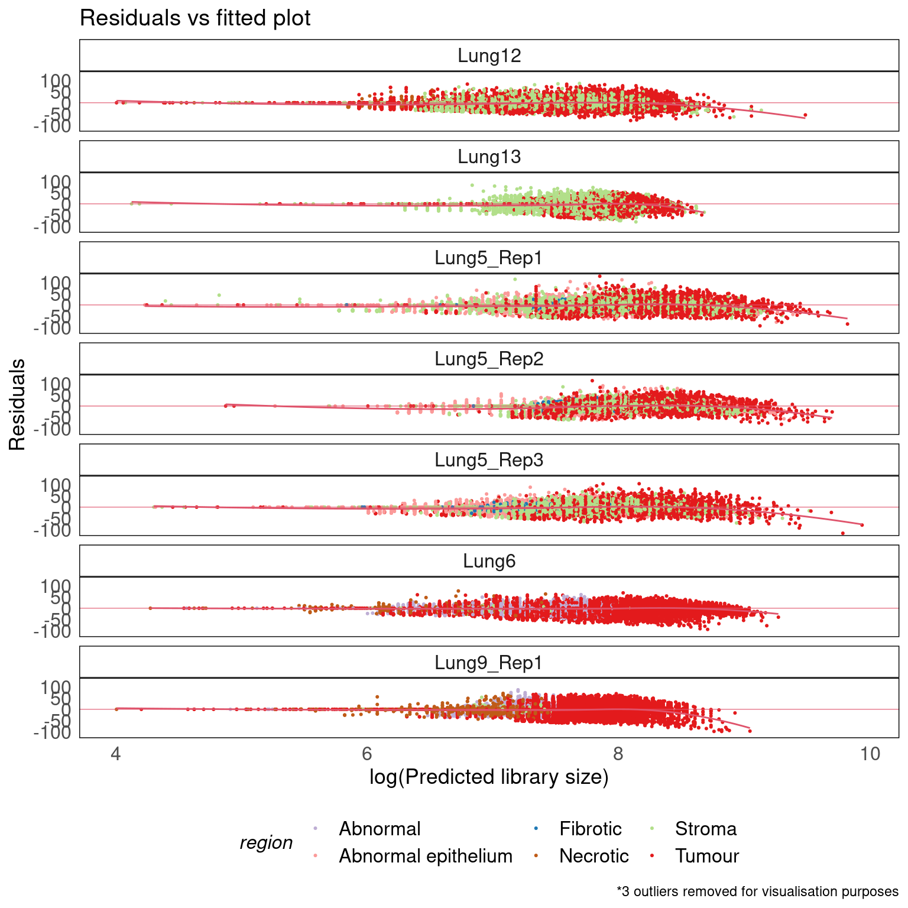

CosMx NSCLC - Library size confounds biology in spatial transcriptomics
Dharmesh D. Bhuva, Chin Wee Tan, Claire Marceaux, Jinjin Chen, Malvika Kharbanda, Xinyi Jin, Ning Liu, Kristen Feher, Givanna Putri, Marie-Liesse Asselin-Labat, Belinda Phipson, Melissa J. Davis
Last updated: 2023-06-16
Checks: 7 0
Knit directory: SpatialLibrarySizePaper/
This reproducible R Markdown analysis was created with workflowr (version 1.7.0). The Checks tab describes the reproducibility checks that were applied when the results were created. The Past versions tab lists the development history.
Great! Since the R Markdown file has been committed to the Git repository, you know the exact version of the code that produced these results.
Great job! The global environment was empty. Objects defined in the global environment can affect the analysis in your R Markdown file in unknown ways. For reproduciblity it’s best to always run the code in an empty environment.
The command set.seed(20230612) was run prior to running
the code in the R Markdown file. Setting a seed ensures that any results
that rely on randomness, e.g. subsampling or permutations, are
reproducible.
Great job! Recording the operating system, R version, and package versions is critical for reproducibility.
Nice! There were no cached chunks for this analysis, so you can be confident that you successfully produced the results during this run.
Great job! Using relative paths to the files within your workflowr project makes it easier to run your code on other machines.
Great! You are using Git for version control. Tracking code development and connecting the code version to the results is critical for reproducibility.
The results in this page were generated with repository version ee0b97b. See the Past versions tab to see a history of the changes made to the R Markdown and HTML files.
Note that you need to be careful to ensure that all relevant files for
the analysis have been committed to Git prior to generating the results
(you can use wflow_publish or
wflow_git_commit). workflowr only checks the R Markdown
file, but you know if there are other scripts or data files that it
depends on. Below is the status of the Git repository when the results
were generated:
Ignored files:
Ignored: .Rhistory
Ignored: .Rproj.user/
Ignored: analysis/figure/
Untracked files:
Untracked: code/libsize_cosmx.Rmd-2023-06-16-18h-22m-43s-err.txt
Untracked: code/libsize_cosmx.Rmd-2023-06-16-18h-22m-43s-out.txt
Untracked: code/slurm-12442036.out
Untracked: code/slurm-12442042.out
Untracked: code/wflow_build.R
Untracked: code/wflow_build.sh
Note that any generated files, e.g. HTML, png, CSS, etc., are not included in this status report because it is ok for generated content to have uncommitted changes.
These are the previous versions of the repository in which changes were
made to the R Markdown (analysis/libsize_cosmx.Rmd) and
HTML (docs/libsize_cosmx.html) files. If you’ve configured
a remote Git repository (see ?wflow_git_remote), click on
the hyperlinks in the table below to view the files as they were in that
past version.
| File | Version | Author | Date | Message |
|---|---|---|---|---|
| Rmd | ee0b97b | bhuva.d | 2023-06-16 | added analysis files and their rendered versions |
knitr::opts_chunk$set(warning = FALSE, message = FALSE)# load packages required for analysis
library(tidyverse)
library(patchwork)
library(SpatialExperiment)
library(ExperimentHub)
library(SubcellularSpatialData)
library(car)Load data
All transcript detection level data is hosted on the ExperimentHub as
part of the SubcellularSpatialData package. Data on the
ExperimentHub can be queried as below. The
SubcellularSpatialData hosts region annotated data from 3
sub-cellular resolution spatial transcriptomics platforms (NanoString
CosMx, 10x Xenium, and BGI STOmics).
#identify datasets present in the data package
eh = ExperimentHub()
query(eh, 'SubcellularSpatialData')ExperimentHub with 3 records
# snapshotDate(): 2023-06-01
# $dataprovider: NanoString, BGI, 10x
# $species: Mus musculus, Homo sapiens
# $rdataclass: data.frame
# additional mcols(): taxonomyid, genome, description,
# coordinate_1_based, maintainer, rdatadateadded, preparerclass, tags,
# rdatapath, sourceurl, sourcetype
# retrieve records with, e.g., 'object[["EH8230"]]'
title
EH8230 | xenium_mm_brain
EH8231 | stomics_mm_brain
EH8232 | cosmx_hs_nsclc Transcript detection data from the package is loaded as follows and contains the x and y coordinates of each detection/spot, gene name, gene count (1 for CosMx and Xenium representing each detection), genetype, region annotations, and other technology specific information.
tx_detections = eh[['EH8232']]
head(tx_detections) sample_id cell gene genetype x y counts region
1 Lung12 <NA> IL7R Gene 402.0722 -157988.8 1 Tumour
2 Lung12 <NA> SEC61G Gene -2389.5576 -158081.7 1 Tumour
3 Lung12 <NA> IGHA1 Gene -3865.9444 -158703.6 1 Tumour
4 Lung12 <NA> CD164 Gene -2885.5976 -158748.9 1 Tumour
5 Lung12 <NA> NegPrb15 NegPrb -356.0778 -158799.1 1 Tumour
6 Lung12 <NA> IL6 Gene -399.7973 -158839.7 1 Tumour
technology Level1 Level2 fov
1 CosMx Tumour area with stroma Epithelium - panCK+ 1
2 CosMx Tumour area with stroma Stroma 1
3 CosMx Tumour area with stroma Stroma 1
4 CosMx Tumour area with stroma Epithelium - panCK+ 1
5 CosMx Tumour area with stroma Epithelium - panCK+ 1
6 CosMx Tumour area with stroma Epithelium - panCK+ 1#total detections per sample
tx_detections |>
group_by(sample_id) |>
summarise(TotalDetections = sum(counts))# A tibble: 8 × 2
sample_id TotalDetections
<chr> <dbl>
1 Lung12 26058382
2 Lung13 29995458
3 Lung5_Rep1 37226610
4 Lung5_Rep2 40286575
5 Lung5_Rep3 31481632
6 Lung6 35777062
7 Lung9_Rep1 26275891
8 Lung9_Rep2 33443058This workflow analyses the NanoString CosMx data. Data were annotated using the 4 stained markers (DAPI, PanCK, CD45, and CD3) provided alongside the transcript detection data. These markers stain proteins therefore form an independent line of evidence.
colmap = c(
'Tumour' = '#E31A1C',
'Stroma' = '#B2DF8A',
'Abnormal epithelium' = '#FB9A99',
'Fibrotic' = '#1F78B4',
'Abnormal' = '#BEAED4',
'Necrotic' = '#BF5B17'
)#region summaries
tx_detections |>
filter(genetype %in% 'Gene', !is.na(region)) |>
group_by(sample_id, region) |>
summarise(TotalDetections = sum(counts)) |>
mutate(PropDetections = TotalDetections / sum(TotalDetections)) |>
arrange(desc(PropDetections)) |>
ggplot(
aes(
fct_reorder(region, PropDetections, median),
PropDetections,
fill = region,
group = paste(sample_id, region)
)
) +
geom_bar(stat = 'identity', position = 'dodge') +
scale_fill_manual(values = colmap) +
labs(x = 'Region', y = 'Proportion of detections', colour = 'Region') +
vissE::bhuvad_theme() +
theme(legend.position = 'bottom', axis.text.x = element_blank())Summarise detections in bins
Since cell boundary detection is still a work in progress, we bin
individual detections in to a hexagonal grid with 200 bins along each
axis. The results are saved into a SpatialExperiment object
where each column represents a bin and each row a gene.
spe = tx2spe(tx_detections, bin = 'hex', nbins = 100)
spe$ntranscripts = colSums(counts(spe)[rowData(spe)$genetype %in% 'Gene', ])
speclass: SpatialExperiment
dim: 980 93188
metadata(0):
assays(1): counts
rownames(980): IL7R SEC61G ... CXCL12 CEACAM1
rowData names(2): gene genetype
colnames(93188): Lung12_1 Lung12_2 ... Lung9_Rep2_11533
Lung9_Rep2_11534
colData names(10): sample_id bin_id ... Level2 ntranscripts
reducedDimNames(0):
mainExpName: NULL
altExpNames(0):
spatialCoords names(2) : x y
imgData names(1): sample_idTranscript density reveals tissue architecture
Visualising transcript density using hexbin plots where detections are binned in to a hexagonal grid reveals tissue structure.
hex_counts = as.data.frame(colData(spe)) |>
cbind(as.data.frame(spatialCoords(spe)))
#library size
p1 = hex_counts |>
ggplot(aes(x, y, colour = ntranscripts / 1000)) +
geom_point(size = 0.1) +
scale_colour_viridis_c(option = 'F') +
facet_wrap(~ sample_id, scales = 'free', ncol = 4) +
labs(x = '', y = '', colour = 'Library size (1000s)') +
vissE::bhuvad_theme() +
theme(
axis.text = element_blank(),
panel.background = element_rect(fill = '#444444')
)
#region
p2 = hex_counts |>
ggplot(aes(x, y, colour = region)) +
geom_point(size = 0.1) +
scale_colour_manual(values = colmap, guide = guide_none()) +
facet_wrap(~ sample_id, scales = 'free', ncol = 4) +
labs(x = '', y = '', colour = '') +
vissE::bhuvad_theme() +
theme(
axis.text = element_blank(),
panel.background = element_rect(fill = '#444444')
)
p1 / p2 + plot_layout(guides = 'collect') & theme(legend.position = 'bottom')Average number of transcripts per cell vary across regions
We can assess the average transcripts detected per cell (library size) across regions without assigning transcripts to cells.
\(AvgLibrarySize_{region} = \frac{\#transcripts_{region}}{\#cells_{region}}\)
tx_detections |>
filter(genetype %in% 'Gene', !is.na(region)) |>
group_by(sample_id, region) |>
summarise(LibrarySize = sum(counts) / length(unique(cell))) |>
ggplot(
aes(
LibrarySize / 1000,
fct_reorder(region, LibrarySize, median),
fill = region
),
) +
geom_bar(stat = 'identity') +
scale_fill_manual(values = colmap, guide = guide_none()) +
labs(x = 'Region', y = 'Library size per cell (1000s)') +
facet_wrap(~ sample_id, scales = 'free_x', ncol = 4) +
vissE::bhuvad_theme()
Library size across space is driven by cellular density and spatial regions
We can determine the factors driving transcript detection across space by assessing their effects using binned data. We expect library sizes to be higher in spatial regions with many cells. Based on the observations in the previous sections, we would also suspect that different tissue regions will produce different numbers of transcripts, despite having similar cellular desity. Visualising this effect using the plot below shows how the primary contributor of transcript detections is the number of cells in the binned region. We also see that there is a region specific effect where the library size shifts up or down depending on the region being assessed.
Grey regions representing ventricles of the brain have larger library sizes where more cells are present, however, these library sizes are lower than most other regions of the brain on average. In contrast, the cortex (dark green regions), has much larger library sizes that most other regions and the magnitude of relationship between the number of cells and library sizes (the slope) is much larger (steeper slope).
hex_counts |>
filter(!is.na(region)) |>
ggplot(aes(ncells, ntranscripts / 1000, colour = region)) +
geom_jitter(width = 0.4, size = 0.3) +
scale_colour_manual(values = colmap, guide = guide_none()) +
labs(x = 'Cells per bin', y = 'Detections per bin (1000s)', caption = '*jitter applied for visualisation purposes') +
facet_wrap(~ sample_id, ncol = 4, scales = 'free') +
vissE::bhuvad_theme()Statistical modelling of library sizes reveals a region-specific effect size
Point pattern spatial data can be modelled using an inhomogeneous Poisson point process. A simple approach to model library sizes across space is to bin detections and then model binned counts using a generalised linear models (GLMs) with a Poisson link function. Counts per bin can be modelled as a function of the number of cells, the tissue region and other technology specific covariates such as the field of view. Additionally, if other spatial effects are present, functions of the coordinates can be used to model them. We model the former knowledge driven spatial trends. However, as is evident from some of these analyses, there may be spatial effects around the boundaries of tissues and these can be modelled using the x,y coordinates and their interactions.
#fit models
libsize_models = hex_counts |>
filter(!is.na(region), ncells > 0 | ntranscripts > 0) |>
mutate(fov = as.factor(fov)) |>
group_by(sample_id) |>
summarise(model = list(glm(ntranscripts ~ 0 + ncells * region * fov, family = poisson)),
across(everything(), list)) |>
mutate(model = unlist(model, recursive = FALSE))Model diagnostics using residuals
We can visualise the Pearson and standard residuals to assess the model fit.
#visualise residuals
residuals_df = libsize_models |>
mutate(
Predicted = lapply(model, predict),
Residuals = lapply(model, residuals),
ResidualsPearson = lapply(model, residuals, type = 'pearson'),
) |>
unnest(!c(sample_id, model))Spatial residuals
#plot residuals ves fitted values
residuals_df |>
ggplot() +
geom_point(aes(x, y, colour = Residuals), size = 0.1) +
facet_wrap(~ sample_id, ncol = 2, scales = 'free') +
scico::scale_color_scico(palette = 'bam',
oob = scales::squish,
limits = c(-50, 50) * 1) +
labs(title = 'Residuals by location', x = '', y = '') +
vissE::bhuvad_theme() +
theme(axis.text = element_blank(), legend.position = 'bottom')Residuals vs Fitted
#plot residuals ves fitted values
residuals_df |>
filter(Predicted > 4) |>
ggplot(aes(Predicted, Residuals)) +
geom_point(aes(colour = region), size = 0.4) +
geom_hline(yintercept = 0, col = 2, lwd = 0.2) +
geom_smooth(se = FALSE, col = 2, lwd = 0.5, method = 'loess') +
facet_wrap(~ sample_id, ncol = 1) +
scale_colour_manual(values = colmap) +
labs(
x = 'log(Predicted library size)',
y = 'Residuals',
title = 'Residuals vs fitted plot',
caption = '*3 outliers removed for visualisation purposes'
) +
vissE::bhuvad_theme() +
theme(legend.position = 'bottom')
Scale-location
#plot residuals ves fitted values
residuals_df |>
filter(Predicted > 4) |>
ggplot(aes(Predicted, sqrt(abs(ResidualsPearson)))) +
geom_point(aes(colour = region), size = 0.4) +
geom_smooth(se = FALSE, col = 2, lwd = 0.5, method = 'loess') +
facet_wrap(~ sample_id, ncol = 2) +
scale_colour_manual(values = colmap) +
labs(
x = 'log(Predicted library size)',
y = expression(sqrt('|Std. Pearson resid.|')),
title = 'Scale-location plot',
caption = '*3 outliers removed for visualisation purposes'
) +
vissE::bhuvad_theme() +
theme(legend.position = 'bottom')Regional residuals
#plot residuals ves fitted values
residuals_df |>
ggplot() +
geom_boxplot(aes(reorder(region, Residuals, FUN = var), Residuals, fill = region, group = paste0(region, fov))) +
geom_hline(yintercept = 0, col = 2) +
facet_wrap(~ sample_id, ncol = 2) +
scale_fill_manual(values = colmap) +
labs(title = 'Residuals by region') +
vissE::bhuvad_theme() +
labs(x = 'Region') +
theme(axis.text.x = element_blank()) +
theme(legend.position = 'bottom')Analysing the residuals shows that:
- The Poisson fit works well as there is little to no over-dispersion with respect to the number of cells (fitted vs residual plot).
- There is little to no heteroscedasticity (scale-location plot).
- Much of the unexplained variation is attributed to the lower ends of the tisse which were not annotated properly because of tissue distortion.
- Variation in residuals is not region-specific.
Region-specific effect sizes contribute to library size differences
Having fit the model, we can analyse the effect size of different regions. The modelling we perform allows each region to have its own linear trend between the number of cells and the total trascripts detected. We can therefore analyse the slope and intercepts of these relationships across regions.
This analysis shows that the slope (rate of increase in transcript density with respect to cell density) is generally higher in the cortex (dark green) than in the ventricles of the brain (grays).
coef_df = libsize_models |>
mutate(Coefficient = lapply(model, coef),
Region = lapply(Coefficient, names)) |>
unnest(c(Coefficient, Region)) |>
select(sample_id, Coefficient, Region) |>
group_by(sample_id) |>
mutate(NCell = Coefficient[Region == 'ncells']) |>
ungroup() |>
mutate(
Term = case_when(
grepl('^region[[:alnum:]/ ]+$', Region) ~ 'CoefRegion',
grepl('^ncells:region[[:alnum:]/ ]+$', Region) ~ 'CoefInteraction',
.default = NA_character_
),
Region = gsub('^(ncells:)?region', '', Region)
) |>
drop_na(Term) |>
pivot_wider(names_from = Term, values_from = Coefficient, values_fill = 0) |>
mutate(slope = NCell + CoefInteraction, intercept = CoefRegion)
coef_df |>
ggplot() +
geom_jitter(aes(exp(slope), exp(intercept) / 1e3, colour = Region), size = 3) +
scale_colour_manual(values = colmap, guide = guide_legend(override.aes = list(size = 5, shape = 15))) +
facet_wrap(~ sample_id, ncol = 2) +
labs(
x = "Fold-change per cell",
y = "Average library size (1000s)"
) +
vissE::bhuvad_theme() +
theme(legend.position = "bottom")Validation using ANOVA
We can perform an analysis of variance (ANOVA) analysis on the model
to determine the importance of region and the cell density in predicting
transcript density. We use a Type II ANOVA test from the
car package to do so.
aov_results = libsize_models |>
select(sample_id, model) |>
mutate(ANOVA = lapply(model, car::Anova, test.statistic = 'F')) |>
mutate(ANOVASummary = lapply(ANOVA, function(x) as.data.frame(x))) |>
mutate(Covariate = lapply(ANOVA, function(x) {
as.matrix(x) |> rownames() |> trimws()
})) |>
unnest(c(ANOVASummary, Covariate)) |>
filter(!Covariate %in% 'Residuals') |>
select(!c(model, ANOVA))
aov_results |>
DT::datatable(filter = 'top') |>
DT::formatSignif(2:5, digits = 4)
sessionInfo()R version 4.3.0 (2023-04-21)
Platform: x86_64-pc-linux-gnu (64-bit)
Running under: CentOS Linux 7 (Core)
Matrix products: default
BLAS: /stornext/System/data/apps/R/R-4.3.0/lib64/R/lib/libRblas.so
LAPACK: /stornext/System/data/apps/R/R-4.3.0/lib64/R/lib/libRlapack.so; LAPACK version 3.11.0
locale:
[1] LC_CTYPE=en_US.UTF-8 LC_NUMERIC=C
[3] LC_TIME=en_US.UTF-8 LC_COLLATE=en_US.UTF-8
[5] LC_MONETARY=en_US.UTF-8 LC_MESSAGES=en_US.UTF-8
[7] LC_PAPER=en_US.UTF-8 LC_NAME=C
[9] LC_ADDRESS=C LC_TELEPHONE=C
[11] LC_MEASUREMENT=en_US.UTF-8 LC_IDENTIFICATION=C
time zone: Australia/Melbourne
tzcode source: system (glibc)
attached base packages:
[1] stats4 stats graphics grDevices utils datasets methods
[8] base
other attached packages:
[1] car_3.1-2 carData_3.0-5
[3] SubcellularSpatialData_0.99.4 ExperimentHub_2.8.0
[5] AnnotationHub_3.9.1 BiocFileCache_2.9.0
[7] dbplyr_2.3.2 SpatialExperiment_1.11.0
[9] SingleCellExperiment_1.23.0 SummarizedExperiment_1.31.1
[11] Biobase_2.61.0 GenomicRanges_1.53.1
[13] GenomeInfoDb_1.37.1 IRanges_2.35.1
[15] S4Vectors_0.39.1 BiocGenerics_0.47.0
[17] MatrixGenerics_1.13.0 matrixStats_1.0.0
[19] patchwork_1.1.2 lubridate_1.9.2
[21] forcats_1.0.0 stringr_1.5.0
[23] dplyr_1.1.2 purrr_1.0.1
[25] readr_2.1.4 tidyr_1.3.0
[27] tibble_3.2.1 ggplot2_3.4.2
[29] tidyverse_2.0.0 workflowr_1.7.0
loaded via a namespace (and not attached):
[1] rstudioapi_0.14 jsonlite_1.8.5
[3] magrittr_2.0.3 magick_2.7.4
[5] farver_2.1.1 rmarkdown_2.22
[7] fs_1.6.2 zlibbioc_1.47.0
[9] vctrs_0.6.2 memoise_2.0.1
[11] DelayedMatrixStats_1.23.0 RCurl_1.98-1.12
[13] htmltools_0.5.5 S4Arrays_1.1.4
[15] curl_5.0.1 Rhdf5lib_1.23.0
[17] SparseArray_1.1.9 rhdf5_2.45.0
[19] sass_0.4.6 bslib_0.5.0
[21] htmlwidgets_1.6.2 cachem_1.0.8
[23] igraph_1.4.3 whisker_0.4.1
[25] mime_0.12 lifecycle_1.0.3
[27] pkgconfig_2.0.3 Matrix_1.5-4.1
[29] R6_2.5.1 fastmap_1.1.1
[31] GenomeInfoDbData_1.2.10 shiny_1.7.4
[33] digest_0.6.31 colorspace_2.1-0
[35] AnnotationDbi_1.63.1 ps_1.7.5
[37] rprojroot_2.0.3 dqrng_0.3.0
[39] crosstalk_1.2.0 RSQLite_2.3.1
[41] beachmat_2.17.6 labeling_0.4.2
[43] filelock_1.0.2 fansi_1.0.4
[45] timechange_0.2.0 mgcv_1.8-42
[47] abind_1.4-5 httr_1.4.6
[49] compiler_4.3.0 vissE_1.9.0
[51] bit64_4.0.5 withr_2.5.0
[53] BiocParallel_1.35.2 DBI_1.1.3
[55] hexbin_1.28.3 highr_0.10
[57] HDF5Array_1.29.3 R.utils_2.12.2
[59] rappdirs_0.3.3 DelayedArray_0.27.4
[61] rjson_0.2.21 tools_4.3.0
[63] interactiveDisplayBase_1.39.0 httpuv_1.6.11
[65] R.oo_1.25.0 glue_1.6.2
[67] callr_3.7.3 nlme_3.1-162
[69] rhdf5filters_1.13.2 promises_1.2.0.1
[71] grid_4.3.0 getPass_0.2-2
[73] generics_0.1.3 gtable_0.3.3
[75] tzdb_0.4.0 R.methodsS3_1.8.2
[77] hms_1.1.3 utf8_1.2.3
[79] XVector_0.41.1 BiocVersion_3.18.0
[81] pillar_1.9.0 limma_3.57.2
[83] later_1.3.1 splines_4.3.0
[85] lattice_0.21-8 bit_4.0.5
[87] tidyselect_1.2.0 locfit_1.5-9.8
[89] Biostrings_2.69.1 scuttle_1.11.0
[91] knitr_1.43 git2r_0.32.0
[93] edgeR_3.43.3 xfun_0.39
[95] DropletUtils_1.21.0 DT_0.28
[97] stringi_1.7.12 yaml_2.3.7
[99] evaluate_0.21 codetools_0.2-19
[101] BiocManager_1.30.21 cli_3.6.1
[103] xtable_1.8-4 munsell_0.5.0
[105] processx_3.8.1 jquerylib_0.1.4
[107] Rcpp_1.0.10 png_0.1-8
[109] parallel_4.3.0 ellipsis_0.3.2
[111] blob_1.2.4 sparseMatrixStats_1.13.0
[113] bitops_1.0-7 viridisLite_0.4.2
[115] scales_1.2.1 crayon_1.5.2
[117] scico_1.4.0 rlang_1.1.1
[119] KEGGREST_1.41.0